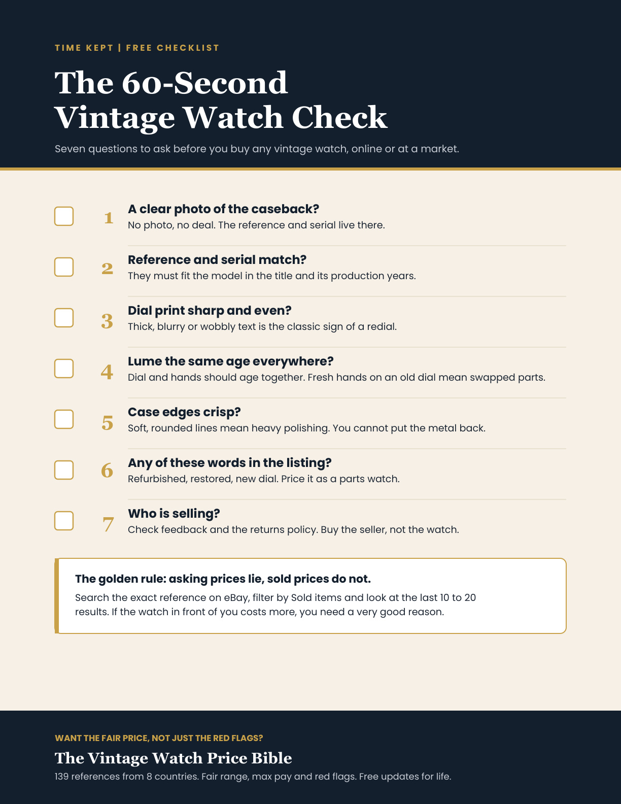

Free printable checklist
The 60-Second Vintage Watch Check.
Seven questions that stop most bad buys before you pay. One page, free, yours in a minute.

What the checklist covers.
- The caseback photo. No photo, no deal.
- Reference and serial. Do they match the model and its years?
- The dial print. The fastest way to spot a repainted dial.
- The lume. Dial and hands should have aged together.
- The case edges. Soft edges mean heavy polishing.
- The listing words. Three words that mean parts watch.
- The seller. Buy the seller, not the watch.
Want the fair price too?
The checklist tells you what to look for. The Vintage Watch Price Bible tells you what to pay, for 139 watches from 8 countries.
See the Price Bible